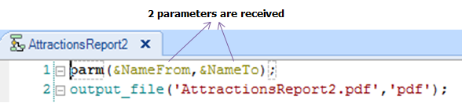

Declares the list of parameters that a GeneXus Object receives from the object(s) which invoke(s) it.
Parm([in:|out:|inout:] parm1, [in:|out:|inout:] parm2, [in:|out:|inout:] parm3,…);
Where:
in: | out: | inout:
Are operators which allow defining for each parameter, how it is going to be used in the called object (in, out, inout).
parm1, parm2, parm3, ... :
Are variables -defined in the called object- or attributes. You can decide for each parameter received, whether you declare an attribute or a variable, regardless of how it was sent.
When an object is called from another object with parameters, the set of parameters received must be declared inside the Parm rule in the called object, respecting the order and the data type as they were sent, each one separated by a comma.
Besides, it is optional to point out for each parameter, how it is going to be used Definition of type of parameters received (in, out, inout).
If the object was invoked with Call, and N parameters were transferred, the N parameters must be declared in the parm rule. However, if the object was invoked with Udp, (unless in the particular case of invoking a Data Provider):
- N + 1 parameters must be declared in the parm rule of the called object.
- The last parameter declared in the parm rule corresponds to the value which is returned (in other words, corresponds to the value received in the caller object).
- In somewhere of the called object, a value must be assigned to the returned (the last) parameter.
Considerations:
- Every object which has a Parm rule defined is not included in the Developer Menu (because if it receives parameters, it must be called with the parameters values).
- Parameters do not receive the null value. If a null value is sent in a parameter, the called program receives an empty value.
- Variables that are in a Parm rule, if put in a form of a Web Panel object or Transaction object are set as read-only by default.
What is the difference between using a variable or an attribute in the Parm rule of the invoked object?
If you receive the value in a variable, it may be used freely in programming; as a filter condition for equality, higher than, greater than or equal to, lesser than, lesser than or equal to, it may be used for some arithmetical operation, or whatever you may need to do with it. On the other hand, if you receive the value in an attribute, it will automatically act as a filter for equality in the object.
If your objective is not to use a value received to filter for equality, then the only solution possible is to receive the values in variables to use them freely.
Examples
The following codes, show two ways of filtering for equality the same information. The result and performance of both solutions are equal.

1) Suppose you define a Web Panel for the user to enter a start and end range of names of attractions to be listed.
As the image shows, two variables and a button are present in the Web Panel form (the default Caption -Confirm- and the default event -Enter- are kept for the button). In the Enter event associated with the button, you have to call the Procedure object that prints the attractions that their names are included in the range indicated by the user.
The Procedure will receive the start and end range of names of attractions, and you have to use the range received to filter the requested attractions.
This is the invocation defined in the Web Panel:
And this is the Parm rule declared in the Procedure:

Note that the variables are named differently regarding the names defined in the Web Panel. What it is important is that the data types sent and received match.
The variables you receive in the Procedure will be used to filter the requested attractions. The following image shows the Procedure source section, with the code that solves the requirement, using the received variables to filter:
Note: Suppose that this Procedure has the properties and rule necessary to print the output in a PDF format.
2) See the proposed examples in the following articles:
Call method
Udp method
Related specification messages
- spc0068 when a parameter has a data type that cannot be used for parameters in certain circunstances.
- spc0023 for each parameter in the call command having a data type that is not compatible with the correspondig in the parm rule
- spc0024 if there are too few parameters in the call command
- spc0025 if there are too many parameters in the call command
|